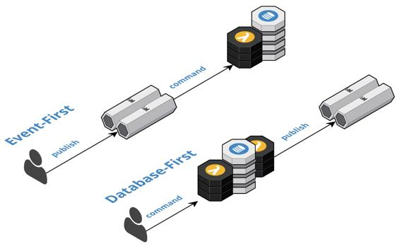

Event Sourcing
Communicate and persist the change in state of domain entities as a series of atomically produced immutable domain events, using Event-First or Database-First techniques, to drive asynchronous inter-component communication and facilitate event processing logic.
